Medellín, Marzo 16 de 2017. 07:30p.m

Inicio
Para Comer
Para Bailar
Experiencias
Galería
Editorial
Para comer
Actualizado hace 5 horas
LOS MEJORES LUGARES PARA CENAR EN LA CIUDAD
Un ‘parche’ tranquilo para experimentar diferentes platos y probar nuevos sabores.
Galería
¡NO DEJES DE DISFRUTAR!
Si te encuentras en Medellín o piensas hacerlo, no olvides mirar las imágenes que se encuentran en esta galería, allí encontrarás las grandes experiencias que vivirás en una o varias noches en la ciudad. Antójate de estos exquisitos platos, seguramente desearás volver.
Para bailar
Actualizado hace 2 horas
MEDELLÍN: PARA TODOS LOS GUSTOS
Como la segunda ciudad más grande de Colombia, podrás salir a divertirte en una gran variedad de lugares.
Al llegar a Medellín sentirás una energía vibrante. Disfrutar de la vida nocturna que la ciudad tiene para ofrecer, es una excelente manera de vivir la cultura de la ciudad.
Editorial
RUTAS ALTERNAS
Medellín: una ciudad prometedora de día y noche.
Experiencias
LO MEJOR DE MEDELLÍN
Ciudad que se queda con el corazón de cada visitante.
Para comer
MERCADO DEL RÍO: LLEGÓ PISANDO FUERTE
Un nuevo espacio que tuvo gran acogida en Medellín.